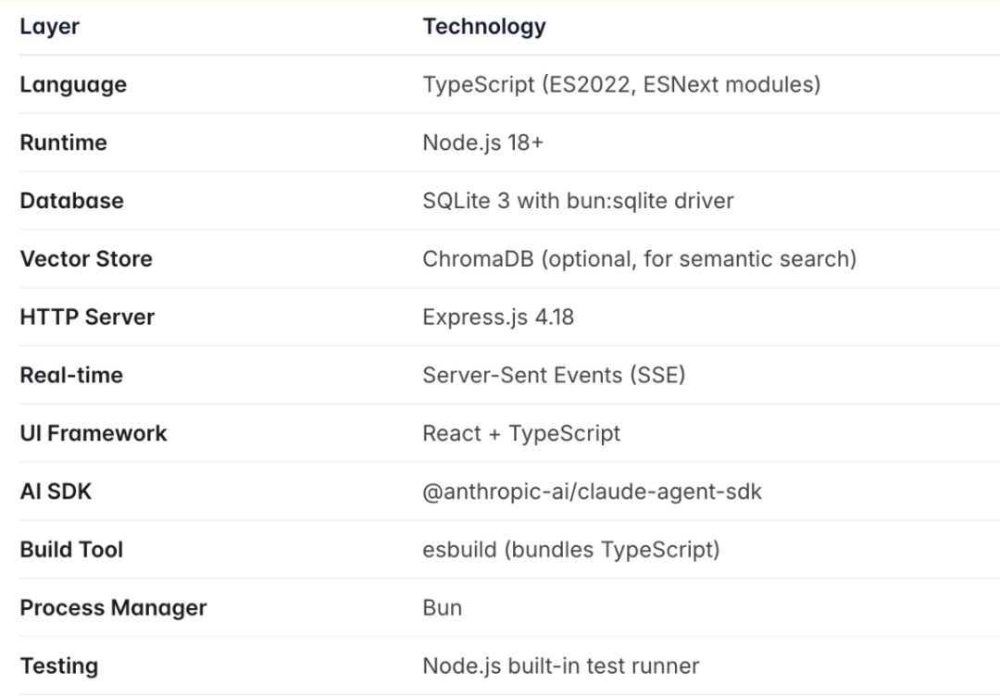

昨天我们聊了怎么复刻OpenClaw的mem系统，为所有Agent打造透明、可控的记忆，然后发布了memsearch。但考虑到在代码领域，如何做好记忆与检索，相比其他场景又有所不同，因此，基于 memsearch CLI ，我们同时也为Claude Code 做了个永久记忆的 plugin——memsearch ccplugin（可适用所有AI coding软件）。https://zilliztech.github.io/memsearch/claude-plugin/借助memsearch ccplugin的轻量级记忆解决方案 ，Claude 会记住你的每次对话、每个决策、每条代码风格偏好以及跨 session、跨天的所有知识，做到自动检索，随时可用。在本文中，为了区分，我们把这个上层的memsearch Claude Code plugin 叫做 ccplugin，把下层的 memsearch 还是叫做原来的 memsearch。
01
我们为什么要做memsearch ccplugin？
早上打开 Claude Code，你想让AI继续昨天的认证重构。Claude 却完全不记得昨天和你昨天一起做了什么。于是，用户就只能倒退回去，开始复制粘贴，这种问题，不算大，但是出现的次数多了，就会变得很烦人。尽管Claude Code 本身具备一定的记忆机制，但在实际生产中，完全不够用。比如其CLAUDE.md 文件可以存储项目指令和偏好，但这更适合存静态规则和简短提示，不适合积累长期知识。当然，Claude Code 也有 resume、fork 这些命令，但用起来很不友好。用户得记住 session ID，手动输入命令，管理一堆分叉的对话历史。此外，当你输入 /resume 命令时，经常出来一堆会话标题，如果你只记得一些历史操作细节，时间又比较久远，那根本不知道哪个是你要找的。于是，市场上又出现了全栈式解决方案claude-mem。它的思路是构建一套完整的记忆系统：自动捕获你的编码活动，用 AI 压缩成可搜索的摘要，在需要时注入相关上下文。为了落地这套思路，claude-mem 打造了一个三层记忆系统：先搜索高层摘要，需要细节就查看时间线，想看原始对话就拿完整 observations，除此之外，还有隐私标签、成本统计、Web 可视化界面。运行层：基于 Node.js 开发的 Worker 服务部署在 37777 端口，会话类基础数据存储在轻量的 SQLite 数据库中，同时引入向量数据库实现记忆内容的精准向量检索；交互层：配套了 React 开发的 Web 可视化 UI，你可以实时查看系统捕获的记忆内容（比如摘要、时间线、原始记录）；接口层：通过 MCP（Model Context Protocol）server 对外暴露标准化工具接口，Claude 可直接调用 search（搜索高层摘要）、timeline（查看细节时间线）、get_observations（获取原始交互记录）等命令，完成记忆的检索和调用。
平心而论，这是一个不错的产品，解决了 Claude Code 的记忆问题，但它也很重，具体包括以下几个方面：环境与组件依赖繁重：用户需要部署 Node.js、Bun、MCP runtime 等基础环境，还要维护 Worker 服务、Express server、React UI、SQLite、向量库等多个组件，每个组件都增加了部署、维护的门槛；Context 窗口与成本开销大：MCP server 的设计存在关键问题 —— 所有工具定义会永久加载到 Claude 的上下文窗口中，且每次工具调用的请求 / 响应都会消耗 tokens；对于长时间运行的会话，这些开销会持续累积，最终可能导致 token 成本失控；记忆召回的被动性：claude-mem 的记忆召回是 “agent-driven（智能体驱动）” 模式，必须由 Claude 主动决定调用 search 等工具才能触发检索；如果 Claude 没意识到需要调取记忆，相关内容就不会出现，且三层记忆系统的每一层都需要 Claude 显式调用对应工具；数据存储不透明：数据分散存储在 SQLite（会话元数据）和 Chroma 向量库（二进制向量数据）中，无通用开放格式；用户想迁移数据需要编写导出脚本，想查看 AI 记住的内容也只能通过 Web UI 或专用接口，无法直接访问底层数据。也是基于以上现实，我们开始思考：记忆系统能不能更简单？02
memsearch ccplugin 是如何构建的
承接前文对 claude-mem 全栈架构带来高复杂度的分析，我们开发的 memsearch ccplugin 走了完全相反的路线 ，以极简为核心设计哲学，用最轻量化的方式解决 Claude Code 的记忆问题。memsearch ccplugin 的架构核心是四个 shell hooks，加上一个后台 watch 进程。完全摒弃了 Node.js、MCP server、Web UI 等复杂组件，本质上就是几个调用 memsearch CLI 的 shell 脚本，大幅降低了部署、维护的门槛。从职责边界来看，memsearch ccplugin 本身不做记忆存储、不做向量检索、不做文本嵌入。而是将这些全部交由底层的 memsearch CLI 来实现；ccplugin 唯一的核心职责，就是充当桥梁，把 Claude Code 全生命周期的关键事件（比如会话启动、用户输入 prompt、停止回复、会话结束），精准桥接到 memsearch CLI 的对应功能上。这种分层解耦的设计带来了极强的灵活性：即便你不用 Claude Code，memsearch CLI 也能独立对接其他 IDE、Agent 框架，甚至手动调用，不会受限于单一使用场景。第一：Markdown 优先，Milvus 是配角，数据永远可以从 `.md` 文件重建。ccplugin 的所有记忆都存在 .memsearch/memory/ 目录下的 Markdown 文件里。.memsearch/memory/├── 2026-02-09.md├── 2026-02-10.md└── 2026-02-11.md
每个文件是一天的 session 摘要，纯文本，人类可读。比如以下就是 memsearch 项目本身的每日记忆的 Markdown 文件截图：可以明确看到，时间，会话 ID，每轮对话的ID，会话的摘要，非常清晰。因此，想知道 AI 记住了什么，可以直接打开 Markdown。想修改记忆？编辑器改就行。想迁移数据？复制 .memsearch/memory/ 文件夹。过程中，向量索引仅作缓存：Milvus 向量库中的索引只是为了加速语义检索，可随时从 Markdown 文件重建。这意味着，整个过程零不透明数据库，零二进制黑盒，数据永远可追溯、可重建。透明的存储只是第一步，真正的效率来自于如何使用这些记忆，ccplugin 的记忆召回是自动的。每次你输入 prompt，UserPromptSubmit hook 会自动触发语义搜索，把 top-3 相关记忆注入到上下文中。Claude 不需要决定是否搜索，它可以直接得到上下文。过程中，Claude 看不到任何 MCP tool definitions（不会占用 context window），也无需主动调用工具；Hook 机制在 CLI 层面运行，注入的只是纯文本搜索结果，无 IPC开销，也没有工具调用的 token 成本，彻底避免 context 开销累积。另外，值得一提的是，为兼顾效率和灵活性，我们设计了三层渐进式检索逻辑（均为CLI命令）：L1（自动层）：每次输入自动返回 top-3 语义搜索结果（chunk_hash+200 字预览），满足日常需求；L2（按需层）：需完整上下文时，运行memsearch expand 获取完整 Markdown 章节 + 元数据；L3（深入层）：需原始对话时，运行memsearch transcript --turn 调取 JSONL 格式原始记录；整体逻辑是先给概览，再按需深入，既保证默认使用的轻量化，又满足特殊场景的细节需求。记忆的检索解决了用的问题，但在这之前，我们需要先考虑，到底要怎么存，以及存什么？ccplugin 的 Markdown 记忆内容，是通过一套后台异步、极低成本的流程自动生成的：每次你停止 Claude 的回复时，Stop hook 会异步触发去解析对话记录（transcript），调用 Claude Haiku 模型（claude -p --model haiku）生成会话摘要，追加到当天的 Markdown 文件。（Haiku 模型 API 调用成本极低，几乎可忽略）紧接着，后台 watch 进程检测到 Markdown 文件变化后，自动将新内容索引到 Milvus，保证检索时效性；整个流程全程后台运行，不干扰用户操作，且成本可控。03
快速上手
第一步：在 Claude Code 中通过插件市场安装：/plugin marketplace add zilliztech/memsearch/plugin install memsearch
第二步：重启 Claude Code，插件会自动初始化配置；cat .memsearch/memory/$(date +%Y-%m-%d).md
第四步：下次启动 Claude Code 时，系统会自动检索并注入相关记忆，无需额外操作。04
结尾
回到最开始的问题：如何给 AI 加记忆，claude-mem 与memsearch ccplugin各有优劣，这是我们整理的一个快速选型指南：claude-mem 提供了更丰富的功能、更完善的 UI、更灵活的控制。如果你需要团队协作、Web 可视化、精细的记忆管理，它是好选择。memsearch ccplugin 提供了极简的设计、零上下文消耗、透明的存储。如果你只想要一个轻量的记忆层，不需要额外的复杂度，它可能更适合。https://zilliztech.github.io/memsearch/claude-plugin/https://github.com/zilliztech/memsearch/tree/main/ccpluginhttps://github.com/zilliztech/memsearch张晨
Zilliz Algorithm Engineer